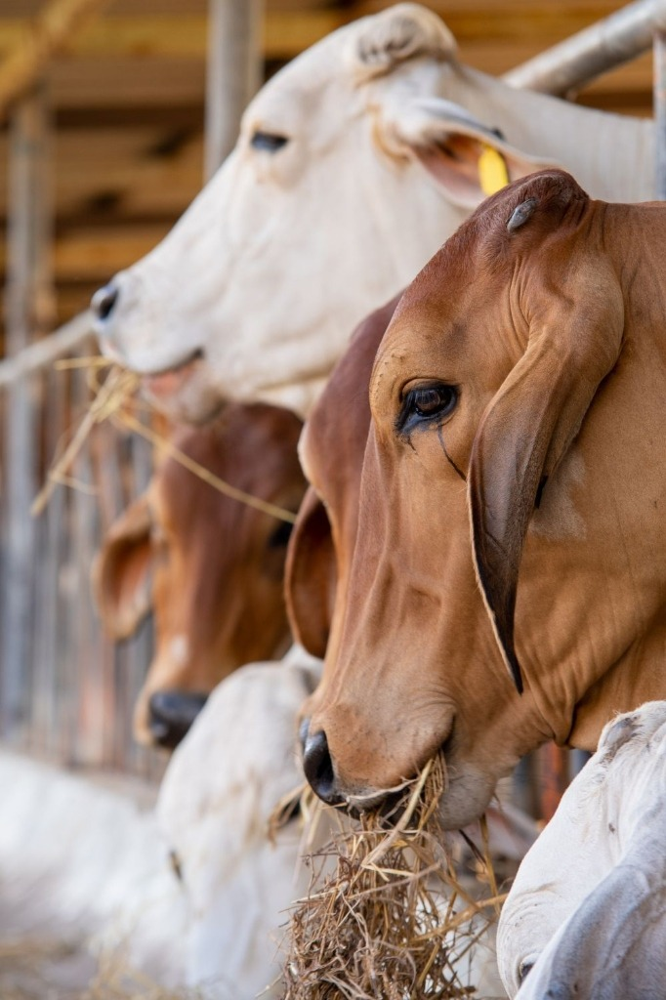
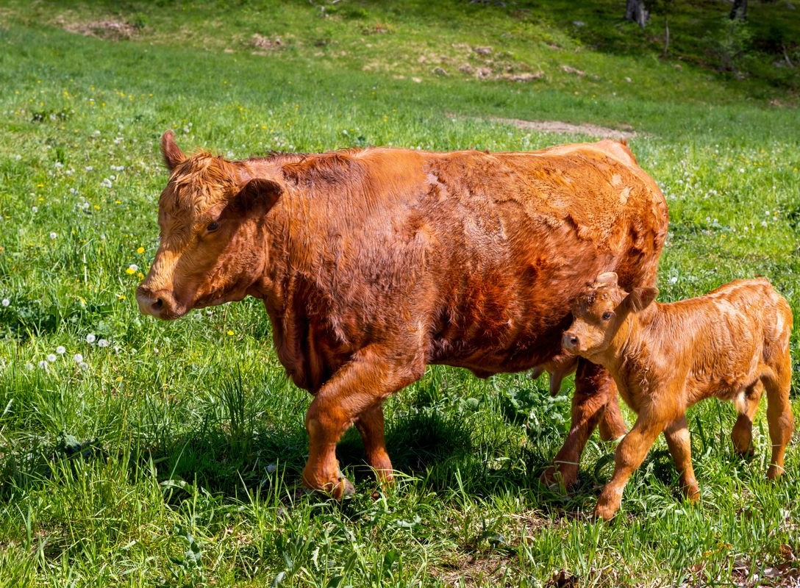

Ahimsa ethics
Calves always nurse first to their full satisfaction before any milk is collected. Cows are respected family, never abandoned or slaughtered.
Discover the spiritual and ecological philosophy behind VC Organic Farms — from sacred Gir cows and calf-first milking to traditional bilona firewood churning and pesticide-free living soils.
Calves always nurse first to their full satisfaction before any milk is collected. Cows are respected family, never abandoned or slaughtered.
Indigenous Desi Gir cattle carry the sacred dorsal hump and Surya Ketu nadi, naturally yielding medicinal, gut-friendly A2 beta-casein proteins.
Curd churned bi-directionally with wooden bilona rods and simmered over cow dung & wood embers in copper vessels into aromatic golden ghee.
100% pesticide-free green fodder nourished by indigenous cow manure and natural bio-fertilizers, keeping heavy metals out of the food chain.
Our cattle live with dignity. Unlike industrial dairy cows confined to concrete stalls and pumped with oxytocin injections, our Gir cows graze peacefully in open sunlit meadows, graze on native grasses, and rest on soft earthen ground.
They are nurtured with pure water, fresh green seasonal fodder, and holistic Ayurvedic herbal tonics including Ashwagandha and Shatavari during lactation.
Taste pure A2 milk ↗
VC Organic Farms · Indigenous Gir Cows Gau SevaCommercial ghee is made in minutes by heating cream from factory separators. Traditional Vedic Bilona Ghee takes over 30 hours of patient, reverent craft.
Whole A2 milk is boiled in heavy earthen pots, cultured into probiotic whole curd, and churned at dawn with a wooden bilona into makkhan (white butter). The makkhan is slow-clarified over mild firewood flames into granular golden Amrit.
Explore Bilona Ghee ↗ VC Organic Farms · Traditional Clay Pot Churning
VC Organic Farms · Traditional Clay Pot Churning
At VC Organic Farms, elder cows that have ceased producing milk and retired male bulls live comfortably on our sanctuary grounds for the rest of their natural lives. We believe their blessings and presence protect the land and sanctify every drop of milk we produce.
When you subscribe to VC Organic Farms, you actively protect and support authentic indigenous cow preservation and ethical rural agriculture.
Join our farm family ↗
VC Organic Farms · Lifelong Ahimsa Sanctuary Care